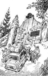

Главная | История | Отделы | Сотрудники | Сокращения и определения | Каталог
НИИЧАВО занимается научными исследованиями в различных областях магии — от самых архаичных до наиболее передовых. Сотрудниками НИИЧАВО являются как маги с огромным стажем (и столь же впечатляющей репутацией), так и маги нового «нового» поколения.
Здесь работают магические существа (домовые, гномы, вурдалаки) и даже незапамятного возраста личности, возможности которых сравнимы только с возможностями богов (например, Саваоф Баалович Один).
Институт возглавляет директор Янус Полуэктович Невструев, который благодаря особым свойствам своей личности существует в двух экземплярах — как А-Янус и У-Янус . У-Януса прекрасно, во всех подробностях, осведомлен о событиях завтрашнего дня. А-Янус - детально помнит события дней минувших.
Главная | История | Отделы | Сотрудники | Сокращения и определения | Каталог
© НИИЧАВО: 1756 - 2007